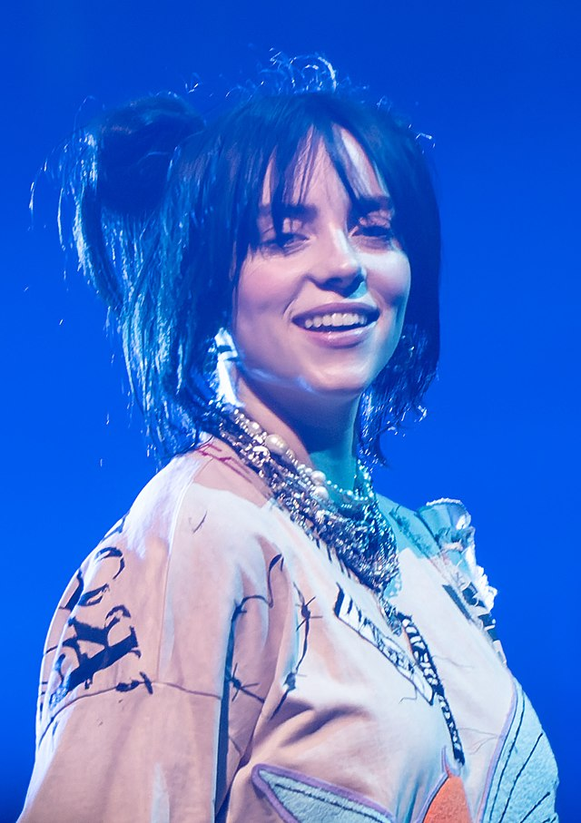

TOP 5 ARTISTAS DE POP MÁS ESCUCHADOS
1. Taylor Swift
Taylor Swift sigue siendo una de las artistas más populares del pop, con su álbum "Midnights" rompiendo récords en todo el mundo.
2. Harry Styles
Con su álbum "Harry's House" y éxitos como "As It Was", Harry Styles continúa dominando la escena pop internacional.
3. Billie Eilish
Con un estilo único y su álbum "Happier Than Ever", Billie Eilish ha consolidado su lugar en la cima de la música pop.
4. Dua Lipa
Dua Lipa sigue siendo una estrella del pop mundial, gracias a éxitos como "Levitating" y "Dance the Night".

5. The Weeknd
Con su fusión única de pop y R&B, The Weeknd sigue dominando las listas de éxitos con temas como "Blinding Lights".

TOP 5 ARTISTAS DE ROCK MÁS ESCUCHADOS
1. Foo Fighters
Foo Fighters sigue siendo una de las bandas de rock más populares con su nuevo álbum "But Here We Are".

2. Arctic Monkeys
Con su estilo distintivo y álbumes como "Tranquility Base Hotel & Casino", Arctic Monkeys sigue en la cima del rock moderno.

3. The Rolling Stones
A pesar de décadas en la industria, The Rolling Stones siguen lanzando música nueva y llenando estadios con su icónico rock.
4. Imagine Dragons
Con éxitos como "Believer" y "Thunder", Imagine Dragons es una de las bandas más destacadas del rock alternativo.

5. Muse
Muse sigue rompiendo esquemas con su rock experimental, siendo su último álbum "Will of the People" un gran éxito.
ARTISTAS MÁS ESCUCHADOS POR LA COMUNIDAD LGBT
1. Lady Gaga
Conocida como un ícono para la comunidad LGBT, Lady Gaga ha sido una defensora incansable de los derechos LGBTQ+ y su música, como "Born This Way", es un himno para la comunidad.
2. Sam Smith
Sam Smith, un artista abiertamente no binario, ha capturado la atención del público con su voz potente y canciones como "Stay With Me" y "Unholy".
3. Troye Sivan
Troye Sivan ha sido un defensor abierto de los derechos LGBT y su música, con éxitos como "Bloom" y "My My My!", resuena fuertemente en la comunidad.
4. Lil Nas X
Lil Nas X rompió barreras con su canción "Montero (Call Me By Your Name)", convirtiéndose en una figura destacada en la música pop y en la defensa de los derechos LGBT.
5. RuPaul
RuPaul, con su icónico programa "RuPaul's Drag Race", ha sido un influyente defensor de la comunidad drag y LGBT, con su música y presencia en el escenario siendo una fuente de orgullo.